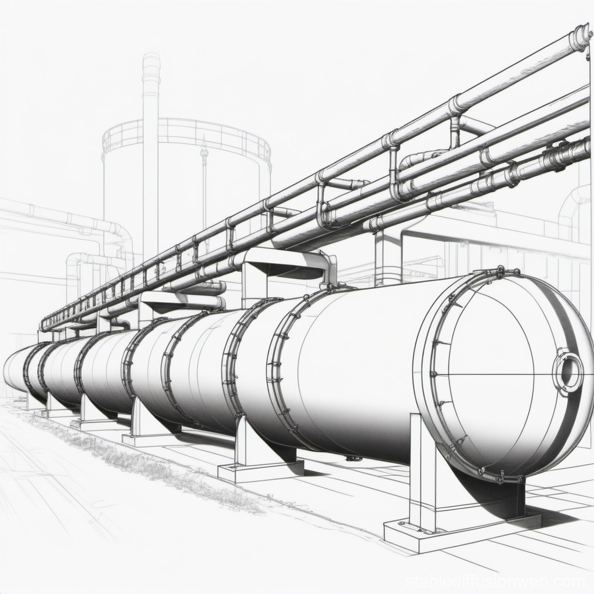
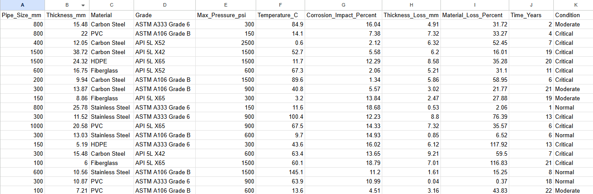
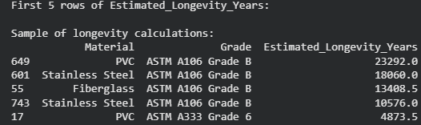
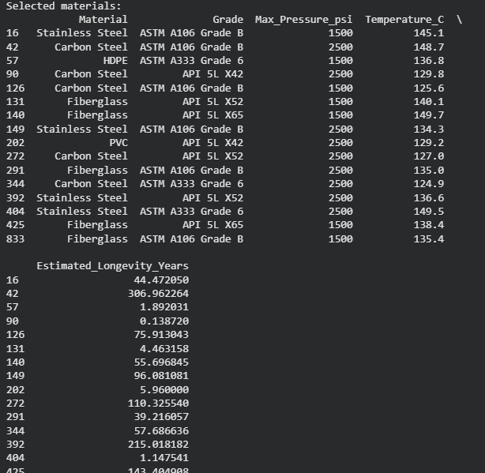
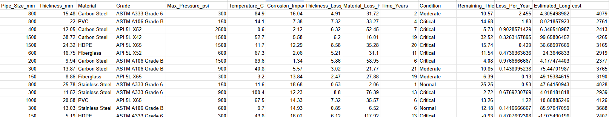
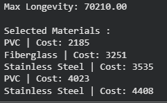

MatOptima
This project analyzes material performance data in the oil and gas industry to estimate pipe longevity, filter optimal materials, and optimize cost-efficiency using a combination of data analysis, linear programming (LP), and dynamic programming (DP). It is designed to help engineers or data scientists select materials that maximize pipeline lifespan under given environmental and operational constraints.


- Data dictionary
- Pipe_Size_mm – Diameter of the pipe.
- Thickness_mm – Original wall thickness of the pipe.
- Material / Grade – Type of material (e.g., Carbon Steel, PVC, HDPE, Fiberglass, Stainless Steel) and its standard grade.
- Max_Pressure_psi – Maximum operating pressure the pipe can handle.
- Temperature_C – Operating temperature.
- Corrosion_Impact_Percent – Estimated percentage impact of corrosion under those conditions.
- Thickness_Loss_mm – Actual material lost due to corrosion.
- Material_Loss_Percent – Percentage of total thickness lost.
- Time_Years – Time period over which the loss occurred.
- Condition – Qualitative health status of the pipe (e.g., Normal, Moderate, Critical).
Data Preparation:
import pandas as pd
import numpy as np
from pulp import LpMaximize, LpProblem, LpVariable, lpSum, LpBinary
def transform(df):
print("Transforming data...")
df = df.drop_duplicates() #avoid analyzing the same type of material
df = df.dropna() #remove N/A value
df = df.reset_index(drop=True)
return df
Section A:
This function below calculates the estimated longevity of materials based on their thickness loss over time. It processes the dataset by first determining the material loss per year, then estimating how many years remain before the material reaches full degradation based on its current thickness. This simplified approach does not take into account other factors such as pipe size, temperature, or operating conditions
def calculated_longevity(df):
df['Remaining_Thickness_mm'] = df['Thickness_mm'] - df['Thickness_Loss_mm']
df['Loss_Per_Year_mm'] = df['Thickness_Loss_mm'] / df['Time_Years']
df['Estimated_Longevity_Years'] = df['Remaining_Thickness_mm'] / df['Loss_Per_Year_mm']
df = df.reset_index(drop=True)
print("First 5 rows of Estimated_Longevity_Years:")
print("\nSample of longevity calculations:")
print(df[['Material', 'Grade', 'Estimated_Longevity_Years']].sort_values(by='Estimated_Longevity_Years', ascending=False).head(5))
return df
df = calculated_longevity(df)

Section B:
This function applies linear programming to identify the optimal material choices that maximize durability while still satisfying key operational requirements The model evaluates each material based on its estimated longevity and selects those that best meet minimum constraints for pressure and temperature. This approach helps determine the best-performing materials that are both long-lasting and fit for the required operating conditions. Assume Max_pressure_psi = 1000 and Min_Temperature_C = 120 is the condition
def optimize_materials(df):
prob = LpProblem('select_Best_Materials', LpMaximize)
#Variables
x = {i: LpVariable(f"x_{i}", cat=LpBinary) for i in df.index}
#Objective:
prob += lpSum(x[i] * df.loc[i, 'Estimated_Longevity_Years'] for i in df.index)
#constraint
#prob += lpSum(x[i] * df.loc[i, 'Max_Pressure_psi'] for i in df.index) >= 1000, "Max_pressure_psi"
#prob += lpSum(x[i] * df.loc[i, 'Temperature_C'] for i in df.index) >= 100, "Temperature_C"
for i in df.index:
if df.loc[i, 'Max_Pressure_psi'] < 1000 or df.loc[i, 'Temperature_C'] < 120:
# Prevent selection by forcing x[i] = 0
prob += x[i] == 0
prob.solve()
selected = [i for i in df.index if x[i].value() == 1]
print("Selected materials:")
print(df.loc[selected, ['Material', 'Grade','Max_Pressure_psi','Temperature_C', 'Estimated_Longevity_Years']])
return(df)
df = optimize_materials(df)

Section C:
In engineering systems such as pipelines, selecting the right material is critical for ensuring durability and cost efficiency. Different materials vary in cost and performance, particularly in how long they can withstand environmental and operational stress before degradation occurs. This function is design to build a data-driven optimization model to help select the best combination of pipe materials under a fixed budget. Each material is associated with a cost and an estimated longevity (service life in years). The goal is to maximize total system longevity while staying within financial constraints. The original data does not include a budget constraint, so we will add one for demonstration purposes.
def add_cost(df):
df["cost"] = np.random.randint(2000,5000, size= len(df))
df.to_csv("market_pipe_thickness_loss_dataset_with_cost.csv", index=False)
print(df.head())
return df

Assuming the total available budget for all materials is $1800, the optimization model becomes significantly more constrained. This means that only a limited subset of materials can be selected, and the algorithm must prioritize the most cost-effective options that provide the highest estimated longevity. Under this budget constraint, each material is evaluated based on its cost relative to its performance (estimated service life). The objective is to identify the optimal combination of materials that maximizes total system longevity without exceeding the available budget of 1800. As a result, lower-cost materials with higher durability efficiency are more likely to be selected, while expensive or less efficient materials are excluded from the final solution. We will continue to find the set of materials that satisfies the budget constraint using Dynamic Programming method
def dp_material_selection(df, budget = 18000):
df = pd.read_csv("market_pipe_thickness_loss_dataset_with_cost.csv") #update new cvs
n = len(df)
#create a dp table
dp = [[0 for _ in range(budget + 1)] for _ in range(n + 1)]
for i in range (1,n+1):
cost = df.loc[i-1, 'cost']
longevity = df.loc[i-1, 'Estimated_Longevity_Years']
for w in range (1, budget +1):
if cost <= w:
dp[i][w] = max((dp[i-1][w]), (dp[i-1][w-cost] + longevity))
else:
dp[i][w] = dp[i-1][w]
w = budget
selected_materials = []
for i in range(n, 0, -1):
if dp[i][w] != dp[i-1][w]:
selected_materials.append(i-1)
w -= df.loc[i-1, 'cost']
selected_materials.reverse()
print(f"Max Longevity: {dp[n][budget]:.2f}")
print("\nSelected Materials :")
for idx in selected_materials:
material = df.loc[idx, 'Material'] # change column name if different
cost = df.loc[idx, 'cost']
print(f"{material} | Cost: {cost}")
df= dp_material_selection(df)

We can conclude that with the fixed budget as $1800, we can only select a subset of materials that maximize the total system longevity within the budget constraint.